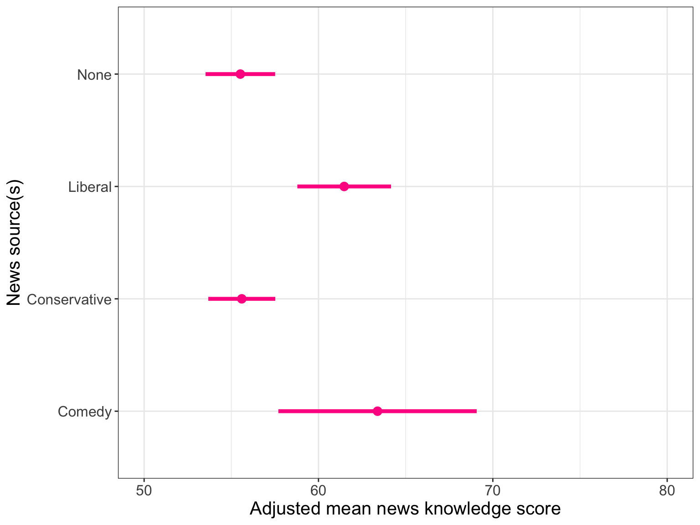

# Load libraries
library(broom)
library(corrr)
library(ggridges)
library(tidyverse)
# Read in data
pew = read_csv(file = "https://raw.githubusercontent.com/zief0002/modeling/main/data/pew.csv")
# View data
pew19 Polychotomous Categorical Predictors
In this chapter, you will learn about how to include categorical predictors with more than two categories in the regression model. To do so, we will use the pew.csv data to examine whether American’s news knowledge differs based on the source of their news (see the data codebook). To begin, we will load several libraries and import the data into an object called pew.
The tidyverse library is a meta-package that includes dplyr, forcats, ggplot2, purrr, readr, stringr, tibble, and tidyr. Loading tidyverse allows you to use all of the functionality in these other packages without having to load eight different packages.
19.1 Data Exploration
To begin, as always, we will plot the marginal distributions of news knowledge (knowledge) and new source (news_source).
# Density plot of news knowledge
p1 = ggplot(data = pew, aes(x = knowledge)) +
stat_density(geom = "line", color = "#c62f4b") +
theme_bw() +
xlab("News knowledge") +
ylab("Probability density")
# Bar plot of news source
p2 = ggplot(data = pew, aes(x = news_source)) +
geom_bar(fill = "#c62f4b") +
theme_bw() +
xlab("News source") +
ylab("Frequency")
# Layout plots
p1 | p2
The distribution of new knowledge is slightly left-skewed with the majority of respondents scoring around 50-75. The distribution of news source indicates that the sample is quite unbalanced among the different news sourcess.1 The majority of the people in the sample do not watch/listen to any of the three news sources or get their news from a conservative source.
What does the distribution of news knowledge look like once we condition on news source? We will explore this by creating a scatterplot of news knowledge versus news source. We will also use the geom_density_ridges() layer from the {ggridges} package to create conditional density plots of news knowledge. It is easier to compare the shape of distributions using conditional density plots. We will also compute the summary measures of news knowledge conditioned on news source.
# Scatterplot
p1 = ggplot(data = pew, aes(x = news_source, y = knowledge)) +
geom_point() +
theme_bw() +
xlab("News source") +
ylab("News knowledge")
# News knowledge conditioned on news source
p2 = ggplot(data = pew, aes(x = knowledge, y = news_source)) +
geom_density_ridges() +
theme_bw() +
ylab("News source") +
xlab("News knowledge")
# Layout plots
p1 | p2
# Compute summary statistics
pew |>
group_by(news_source) |>
summarize(
M = mean(knowledge),
SD = sd(knowledge),
N = n()
) |>
arrange(desc(M))
After conditioning on news source, the data suggest that there are differences in the Americans’ knowledge about current affairs based on their source of news. In the sample, those who get their news from liberal and comedy sources have the highest news knowledge scores, on average. Not surprisingly, those who do not get heir news from any of the sources have the lowest news knoledge scores, on average. Also, those who get their news from liberal or comedy sources tend to score higher (on average) than thos who get their news from conservative sources.
There is, however, a great deal of variation in all the distributions—the SDs range between 16 and 23. This variation makes it difficult to be certain about the trends/differences we saw between the groups without carrying out any inferential analyses (e.g., CIs or hypothesis tests).
19.2 Does News Source Predict Variation in American’s News Knowledge?
To examine whether the sample differences we observed in news knowledge is more than we would expect because of chance, we can fit a regression model using news source to predict variation in news knowledge. Before fitting this model, however, we need to create a set of dummy variables; one for EACH category of the news_source variable. For our analysis, we will need to create EIGHT dummy variables: The mapping for these eight indicators are:
\[ \begin{split} \mathtt{none} &= \begin{cases} 1 \quad \mathrm{for~None}\\ 0 \quad \mathrm{Otherwise} \end{cases} \\[2ex] \mathtt{con} &= \begin{cases} 1 \quad \mathrm{for~Conservative}\\ 0 \quad \mathrm{Otherwise} \end{cases} \\[2ex] \mathtt{com} &= \begin{cases} 1 \quad \mathrm{for~Comedy}\\ 0 \quad \mathrm{Otherwise} \end{cases} \\[2ex] \mathtt{lib} &= \begin{cases} 1 \quad \mathrm{for~Liberal}\\ 0 \quad \mathrm{Otherwise} \end{cases} \\[2ex] \mathtt{con\_com} &= \begin{cases} 1 \quad \mathrm{for~Conservative\_Comedy}\\ 0 \quad \mathrm{Otherwise} \end{cases} \\[2ex] \mathtt{con\_lib} &= \begin{cases} 1 \quad \mathrm{for~Conservative\_Liberal}\\ 0 \quad \mathrm{Otherwise} \end{cases} \\[2ex] \mathtt{lib\_com} &= \begin{cases} 1 \quad \mathrm{for~Liberal\_Comedy}\\ 0 \quad \mathrm{Otherwise} \end{cases} \\[2ex] \mathtt{all} &= \begin{cases} 1 \quad \mathrm{for~All}\\ 0 \quad \mathrm{Otherwise} \end{cases} \\[2ex] \end{split} \]
Below we write the syntax to create all eight dummy variables and save the new columns in the pew data frame.2
# Create all eight dummy variables
pew = pew |>
mutate(
none = if_else(news_source == "None", 1, 0),
con = if_else(news_source == "Conservative", 1, 0),
com = if_else(news_source == "Comedy", 1, 0),
lib = if_else(news_source == "Liberal", 1, 0),
con_com = if_else(news_source == "Conservative_Comedy", 1, 0),
con_lib = if_else(news_source == "Conservative_Liberal", 1, 0),
lib_com = if_else(news_source == "Liberal_Comedy", 1, 0),
all = if_else(news_source == "All", 1, 0),
)
# Examine data
pew |>
print(width = Inf)# A tibble: 1,502 × 17
id knowledge news_source news ideology engagement age education female
<dbl> <dbl> <chr> <dbl> <dbl> <dbl> <dbl> <dbl> <chr>
1 1 50 Conservative 63 39.3 79.5 44.4 14 Yes
2 2 32 All 59 35.6 69.2 67.9 9 Yes
3 3 45 None 49 75.7 61 45.7 12 Yes
4 4 26 None 22 23.5 66.8 39.3 15 Yes
5 5 79 None 54 69.5 80.8 59.5 15 No
6 6 31 Conservative 65 18 99.6 43.8 12 Yes
7 7 22 Conservative 63 33.2 37.4 29.6 10 No
8 8 93 Conservative 50 29.7 88.6 29.6 16 No
9 9 23 None 12 52.5 82.4 45.1 12 Yes
10 10 41 Liberal 16 14 87.3 18.7 11 No
none con com lib con_com con_lib lib_com all
<dbl> <dbl> <dbl> <dbl> <dbl> <dbl> <dbl> <dbl>
1 0 1 0 0 0 0 0 0
2 0 0 0 0 0 0 0 1
3 1 0 0 0 0 0 0 0
4 1 0 0 0 0 0 0 0
5 1 0 0 0 0 0 0 0
6 0 1 0 0 0 0 0 0
7 0 1 0 0 0 0 0 0
8 0 1 0 0 0 0 0 0
9 1 0 0 0 0 0 0 0
10 0 0 0 1 0 0 0 0
# ℹ 1,492 more rowsIf you do not know the actual names of the categories (or you want to check capitalization, etc.) use the unique() function to obtain the unique category names.
# Get the categories
pew |>
select(news_source) |>
unique()It turns out that all eight categories of the predictor are completely identified using any seven of the eight indicator variables. For example, consider the news source for the sample of six people below.
| News Source | all |
con |
com |
lib |
con_com |
con_lib |
lib_com |
|---|---|---|---|---|---|---|---|
By using any seven of the indicators, we can identify the news source for everyone in the sample. For example, in the data shown in Table 19.1, we used all of the indicators except for none. For Americans whose news source is “None”, they would have a 0 for all of the seven indicators used. In other words, we don’t need the information in the none indicator to identify people whose news source is “None”, so long as we have the other seven indicators.
To examine the effect of news source, we will fit the regression using any seven of the eight dummy-coded indicator variables you created. The indicator you leave out of the model will correspond to the reference category. For example, in the model fitted below, we include all the predictors except none as predictors in the model. As such, people whose news source is “None†is our reference group.
Ultimately we will need to fit several models, so I often name my regression objects using the reference group. For example, in the model where “None†is the reference group, I will name my regression object lm.none.
# News source = None is reference group
lm.none = lm(knowledge ~ 1 + all + con + com + lib + con_com + con_lib +
lib_com, data = pew)
# Model-level info
glance(lm.none) |>
print(width = Inf)# A tibble: 1 × 12
r.squared adj.r.squared sigma statistic p.value df logLik AIC BIC
<dbl> <dbl> <dbl> <dbl> <dbl> <dbl> <dbl> <dbl> <dbl>
1 0.103 0.0988 21.8 24.5 9.11e-32 7 -6754. 13526. 13574.
deviance df.residual nobs
<dbl> <int> <int>
1 707719. 1494 1502At the model-level, differences in news source explain 10.3% of the variation in American’s news knowledge. This is statistically discernible from 0 (i.e., the empirical data are not consistent with the hypothesis that news source does not explain any variation in Americans’ news knowledge, \(F(7,1494)=24.50\), \(p < .001\).
In other words, the data suggest there is an effect of news source on news knowledge. Recall that an effect of a categorical predictor means that there are differences in the average value of the outcome between different levels of the predictor. In our example, there are differences in the average news knowledge based on news source. The key question in exploratory research is then: Which news sources show differences in the average news knowledge? In order to answer this, we need to look at the coefficient-level output.
# Coefficient-level info
tidy(lm.none)The fitted regression equation is
\[ \begin{split} \hat{\mathrm{Knowledge}_i} = &48.7 + 16.9(\mathrm{All}_i) + 7.8(\mathrm{Con}_i) + 15.0(\mathrm{Com}_i) + 16.9(\mathrm{Lib}_i) + \\ &11.9(\mathrm{Con\_Com}_i) + 10.8(\mathrm{Con\_Lib}_i) + 28.1(\mathrm{Lib\_Con}_i) \end{split} \]
Recall from the previous chapter, the intercept coefficient is the average Y-value for the reference group. Each partial slope is the difference in average Y-value between the reference group and the group represented by the dummy variable. In our example,
- The average news knowledge score for Americans who have no news source is 48.7.
- Americans who get their news from all three sources (conservative, comedy, and liberal) have a news knowledge score that is 16.9 points higher, on average, than Americans who have no news source.
- Americans who get their news from a conservative source have a news knowledge score that is 7.8 points higher, on average, than Americans who have no news source.
- Americans who get their news from a comedy source have a news knowledge score that is 15 points higher, on average, than Americans who have no news source.
- Americans who get their news from a liberal source have a news knowledge score that is 16.9 points higher, on average, than Americans who have no news source.
- Americans who get their news from conservative and comedy sources have a news knowledge score that is 11.9 points higher, on average, than Americans who have no news source.
- Americans who get their news from conservative and liberal sources have a news knowledge score that is 10.8 points higher, on average, than Americans who have no news source.
- Americans who get their news from liberal and comedy sources have a news knowledge score that is 28.1 points higher, on average, than Americans who have no news source.
The statistical hypothesis associated with each of the parameters in the model are:
- \(H_0:\beta_0 = 0\)
- \(H_0:\beta_{\mathrm{All}} = 0\)
- \(H_0:\beta_{\mathrm{Con}} = 0\)
- \(H_0:\beta_{\mathrm{Com}} = 0\)
- \(H_0:\beta_{\mathrm{Lib}} = 0\)
- \(H_0:\beta_{\mathrm{Con\_Com}} = 0\)
- \(H_0:\beta_{\mathrm{Con\_Lib}} = 0\)
- \(H_0:\beta_{\mathrm{Lib\_Com}} = 0\)
These relate to the following scientific hypotheses, respectively:
- The average news knowledge score for Americans who have no news source (reference group) is 0.
- The average news knowledge score for Americans who get their news from all three sources (conservative, comedy, and liberal) is not different than the average news knowledge score for Americans who have no news source.
- The average news knowledge score for Americans who get their news from conservative sources is not different than the average news knowledge score for Americans who have no news source.
- The average news knowledge score for Americans who get their news from comedy sources is not different than the average news knowledge score for Americans who have no news source.
- The average news knowledge score for Americans who get their news from liberal sources is not different than the average news knowledge score for Americans who have no news source.
- The average news knowledge score for Americans who get their news from conservative and comedy sources is not different than the average news knowledge score for Americans who have no news source.
- The average news knowledge score for Americans who get their news from conservative and liberal sources is not different than the average news knowledge score for Americans who have no news source.
- The average news knowledge score for Americans who get their news from liberal and comedy sources is not different than the average news knowledge score for Americans who have no news source.
Because the scientific hypotheses are really about comparisons of conditional means, the statistical hypotheses can also be written to reflect this as:
- \(H_0:\mu_{\mathrm{None}} = 0\)
- \(H_0:\mu_{\mathrm{All}} = \mu_{\mathrm{None}}\) or equivalently \(H_0:\mu_{\mathrm{All}} - \mu_{\mathrm{None}} = 0\)
- \(H_0:\mu_{\mathrm{Con}} = \mu_{\mathrm{None}}\) or equivalently \(H_0:\mu_{\mathrm{Con}} - \mu_{\mathrm{None}} = 0\)
- \(H_0:\mu_{\mathrm{Com}} = \mu_{\mathrm{None}}\) or equivalently \(H_0:\mu_{\mathrm{Com}} - \mu_{\mathrm{None}} = 0\)
- \(H_0:\mu_{\mathrm{Lib}} = \mu_{\mathrm{None}}\) or equivalently \(H_0:\mu_{\mathrm{Lib}} - \mu_{\mathrm{None}} = 0\)
- \(H_0:\mu_{\mathrm{Con\_Com}} = \mu_{\mathrm{None}}\) or equivalently \(H_0:\mu_{\mathrm{Con\_Com}} - \mu_{\mathrm{None}} = 0\)
- \(H_0:\mu_{\mathrm{Con\_Lib}} = \mu_{\mathrm{None}}\) or equivalently \(H_0:\mu_{\mathrm{Con\_Lib}} - \mu_{\mathrm{None}} = 0\)
- \(H_0:\mu_{\mathrm{Lib\_Com}} = \mu_{\mathrm{None}}\) or equivalently \(H_0:\mu_{\mathrm{Lib\_Com}} - \mu_{\mathrm{None}} = 0\)
where \(\mu_j\) represents the average news knowledge for Americans who get their news from source j (e.g., \(\mu_{\mathrm{Con}}\) indicates the average news knowledge score for Americans who get their news from conservative sources).
It is evaluation of the hypotheses associated with the partial slopes in the model that allow us to answer our question about which news sources show differences in the average news knowledge. The p-values associated with the partial slope coefficients indicate whether the observed differences in news scores (relative to the reference group) are simply due to sampling error, or whether there is a statistically discernible difference in the news knowledge between the groups. Based on the p-values, all seven groups have an average news knowledge score that is statistically discernible than the average news knowledge score for Americans who have no news source. Moreover, based on the positive coefficients, we can assume that those scores are higher than the average news knowledge score for Americans who have no news source.
19.2.1 Alternative Expression of the Model-Level Null Hypothesis
Recall that one expression of the null hypothesis associated with the model-level test in multiple regression is that all the partial slopes are zero. In general,
\[ H_0: \beta_1 = \beta_2 = \ldots = \beta_k = 0 \]
When we use multiple dummy-coded indicator variables to represent a categorical predictor, each partial slope represents the mean difference between two groups, and the effect of that categorical predictor is composed of ALL sets of differences between two groups (pairwise differences). In our example,there are 28 pairwise differences! (Think of all the ways we can compare two of the eight different groups.)
- All sources vs. conservative sources
- All sources vs. comedy sources
- All sources vs. liberal sources
- All sources vs. conservative/comedy sources
- All sources vs. conservative/liberal sources
- All sources vs. liberal/comedy sources
- All sources vs. no sources
- Conservative sources vs. comedy sources
- Conservative sources vs. liberal sources
- Conservative sources vs. conservative/comedy sources
- Conservative sources vs. conservative/liberal sources
- Conservative sources vs. liberal/comedy sources
- Conservative sources vs. no sources
- Comedy sources vs. liberal sources
- Comedy sources vs. conservative/comedy sources
- Comedy sources vs. conservative/liberal sources
- Comedy sources vs. liberal/comedy sources
- Comedy sources vs. no sources
- Liberal sources vs. conservative/comedy sources
- Liberal sources vs. conservative/liberal sources
- Liberal sources vs. liberal/comedy sources
- Liberal sources vs. no sources
- Conservative/comedy sources sources vs. conservative/liberal sources
- Conservative/comedy sources sources vs. liberal/comedy sources
- Conservative/comedy sources sources vs. no sources
- Conservative/liberal sources sources vs. liberal/comedy sources
- Conservative/liberal sources sources vs. no sources
- Liberal/comedy sources sources vs. no sources
The model-level null hypothesis can be expressed as:
\[ \begin{split} H_0: &\bigg(\mu_{\mathrm{All}} - \mu_{\mathrm{Con}}\bigg) = \bigg(\mu_{\mathrm{All}} - \mu_{\mathrm{Com}}\bigg) =\\ &\bigg(\mu_{\mathrm{All}} - \mu_{\mathrm{Lib}}\bigg) = \ldots = \bigg(\mu_{\mathrm{Lib\_Com}} - \mu_{\mathrm{None}}\bigg) = 0 \end{split} \]
The test at the model-level is considering all 28 pairwise differences simultaneously. If the model-level test is statistically discernible from 0, any one (or more than one) of the 28 differences may not be zero.
In our example, we found that the model-level test had a small p-value, so at least one of the 28 comparisons would have results that are statistically discernible from 0.
Note that in our coefficient-level output, we found that 7 of the potential comparisons (those that compare to the “None†group) yielded results that were statistically discernible from zero. That is, based on those results we believe:
- \(\mu_{\mathrm{All}} - \mu_{\mathrm{None}} \neq 0\)
- \(\mu_{\mathrm{Con}} - \mu_{\mathrm{None}} \neq 0\)
- \(\mu_{\mathrm{Com}} - \mu_{\mathrm{None}} \neq 0\)
- \(\mu_{\mathrm{Lib}} - \mu_{\mathrm{None}} \neq 0\)
- \(\mu_{\mathrm{Con\_Com}} - \mu_{\mathrm{None}} \neq 0\)
- \(\mu_{\mathrm{Con\_Lib}} - \mu_{\mathrm{None}} \neq 0\)
- \(\mu_{\mathrm{Lib\_Com}} - \mu_{\mathrm{None}} \neq 0\)
Unfortunately, the coefficient-level output from the regression we fitted, does not give us any information about the other 21 comparisons. In order to get information about the other pairwise comparisons, we need to fit additional regression models using a different reference group.
When you have more than two levels in your categorical predictor in order to examine ALL potential coefficient-level differences, you will need to fit many regression models using different reference groups.
19.3 Pairwise Comparisons for Americans who get their News from Conservative Sources
Consider the pairwise comparisons between Americans who get their News from conservative sources and those who get their news from other sources. There are 7 such comparisons. We already evaluated one of those, namely the comparison between Americans who get their News from conservative sources and those who have no news source. To evaluate the other 6 differences, we need to fit a model in which con is the reference group. By doing this, the partial slopes will indicate the difference in average news knowledge between Americans who get their news each of the other sources and those who get their news from conservative sources. Below, we fit this model (using con as the reference group) to predict variation in news knowledge.
# Conservative news sources is reference group
lm.con = lm(knowledge ~ 1 + all + com + lib + con_com + con_lib +
lib_com + none, data = pew)
# Model-level info
glance(lm.con) |>
print(width = Inf)# A tibble: 1 × 12
r.squared adj.r.squared sigma statistic p.value df logLik AIC BIC
<dbl> <dbl> <dbl> <dbl> <dbl> <dbl> <dbl> <dbl> <dbl>
1 0.103 0.0988 21.8 24.5 9.11e-32 7 -6754. 13526. 13574.
deviance df.residual nobs
<dbl> <int> <int>
1 707719. 1494 1502Note that the model-level output for this fitted model is exactly the same as that for the model in which none was the reference group. That is because at the model-level, this model is testing the exact same hypothesis as the previous model (to examine whether the 28 sets of pairwise differences explain variation in news knowledge). The results suggest that at least one of the pairwise differences is statistically discernible from 0; that is there are differences in the average amount of news knowledge between at least two of the groups.
# Coefficient-level info
tidy(lm.con)The fitted regression equation, which is different than the previous fitted equation, is:
\[ \begin{split} \hat{\mathrm{Knowledge}_i} = &56.5 + 9.1(\mathrm{All}_i) + 7.2(\mathrm{Com}_i) + 9.2(\mathrm{Lib}_i) + \\ &4.0(\mathrm{Con\_Com}_i) + 3.0(\mathrm{Con\_Lib}_i) + 20.3(\mathrm{Lib\_Con}_i) -7.8(\mathrm{None}_i) \end{split} \]
Interpreting these values,
- The average news knowledge score for Americans who get their news from conservative sources is 56.5. The empirical evidence suggests that this is statistically discernible from 0; \(t(1494)=49.50\), \(p<.001\).
- Americans who get their news from all three sources (conservative, comedy, and liberal) have a news knowledge score that is 9.1 points higher, on average, than Americans who get their news from conservative sources. The empirical evidence suggests that this is statistically discernible from 0; \(t(1494)=3.25\), \(p=.001\).
- Americans who get their news from a comedy source have a news knowledge score that is 7.2 points higher, on average, than Americans who get their news from conservative sources. The empirical evidence suggests that this is statistically discernible from 0; \(t(1494)=2.00\), \(p=.046\).
- Americans who get their news from a liberal source have a news knowledge score that is 9.2 points higher, on average, than Americans who get their news from conservative sources. The empirical evidence suggests that this is statistically discernible from 0; \(t(1494)=4.71\), \(p<.001\).
- Americans who get their news from conservative and comedy sources have a news knowledge score that is 4 points higher, on average, than Americans who get their news from conservative sources. The empirical evidence suggests that this is NOT statistically discernible from 0; \(t(1494)=1.35\), \(p=.176\).
- Americans who get their news from conservative and liberal sources have a news knowledge score that is 3 points higher, on average, than Americans who get their news from conservative sources. The empirical evidence suggests that this is NOT statistically discernible from 0; \(t(1494)=1.61\), \(p=.107\).
- Americans who get their news from liberal and comedy sources have a news knowledge score that is 20.3 points higher, on average, than Americans who get their news from conservative sources. The empirical evidence suggests that this is statistically discernible from 0; \(t(1494)=6.66\), \(p<.001\).
- Americans who don’t get their news from any source have a news knowledge score that is 7.8 points lower, on average, than Americans who get their news from conservative sources. The empirical evidence suggests that this is statistically discernible from 0; \(t(1494)=-5.20\), \(p<.001\).
Note that the last comparison (with the none group) is the comparison we already evaluated in the previous model. The coefficient-level output for this gives redundant information that from the previous model—the only difference being that the signs are opposite on the coefficient and t-value since we changed the reference group. (The p-values are identical.)
19.4 Presenting Results of the Pairwise Comparison Tests
Now we have statistical results from 13 of the 28 comparisons. Before we go on and fit other regression models to evaluate our other pairwise comparisons, let’s consider how we might want to present these results to a reader. As always, we can do this by presenting the results in the text of the manuscript, in a table, or in a visualization. If the number of pairwise comparisons is small (say three or fewer), presenting them in the text is reasonable as doing so would take less space than using a table or plot. When you have a larger number of comparisons to present, doing so in text is likely not a good choice due to the cognitive burden this would place on the reader.
A table is a good choice for a small to moderate number of comparisons (e.g., \(\leq10\) comparisons). For example, Table 19.2 presents the results for three pairwise comparisons carried out as part of a research study examining the effects of family structure on teen substance use.
Comparison |
Mean Difference |
p |
|---|---|---|
Once you have more than 10 comparisons, presenting this information in a table can be overwhelming. (If you really need to do this, consider putting the table in an appendix or in online resources rather than in the manuscript itself.) In our case, presenting the results from 28 comparisons would not only make for a long table, but also probably result in readers just skipping over the table. Instead, we will consider presnting our results in a visualization.
There are several options for such a visualization. One that I like, which shows the same pairwise comparisons presented in tbl-mean-diffs, is the following:
Instructions: Read across the row for a family structure to compare substance use with the family structures listed along the top of the chart. The symbols indicate whether the average substance use of the family structure in the row is significantly lower than that of the comparison family structure, significantly higher than that of the comparison family structure, or if there is no statistically discernible difference between the average substance use of the two countries.
The column of mean substance use is handy for readers to see the sample differences. (Including the SD here is not necessary, especially if those are included in a different place in the manuscript.) Note, I listed the family structures from largest mean to smallest mean in the figure (in both the rows and columns). This will put all of the down-pointing triangles in the upper right and the up-pointing triangles in the lower left of the figure. This makes it easier to quickly determine which comparison groups a particular group is hgher or lower than. If you have many, many groups listing them alphabetically makes it easier for readers to find the group they are interested in making comparisons for.
Here we create a similar type of chart to visualize the pairwise comparisons for our news knowledge example. For now, we will fill in only the 13 pairwise comparisons that we have already made. (We will add to this as we evaluate additional pairwise differences.)

Instructions: Read across the row for a news sources to compare news knowledge with the news sources listed along the top of the chart. The symbols indicate whether the average news knowledge of the news source in the row is significantly lower than that of the comparison news source, significantly higher than that of the comparison news source, or if there is no statistically discernible difference between the average news knowledge of the two news sources.
Table-like graphics, such as the pairwise comparison visualizations are often easier to create in Excel (or some other spreadsheet program) than in R. I created these in Excel and then, after turning off the grid lines, took a screenshot and inserted that into this chapter.
19.5 Pairwise Comparisons for Americans who get their News from the Other Sources
Here we fit the additional regression models needed to get the remaining pairwise comparisons.
# Reference group = All News
lm.all = lm(knowledge ~ 1 + con + com + lib + con_com + con_lib +
lib_com + none, data = pew)
# Reference group = Comedy News
lm.com = lm(knowledge ~ 1 + all + con + lib + con_com + con_lib +
lib_com + none, data = pew)
# Reference group = Liberal News
lm.lib = lm(knowledge ~ 1 + all + con + com + con_com + con_lib +
lib_com + none, data = pew)
# Reference group = Conservative and Comedy News
lm.con_com = lm(knowledge ~ 1 + all + con + com + lib + con_lib +
lib_com + none, data = pew)
# Reference group = Conservative and Liberal News
lm.con_lib = lm(knowledge ~ 1 + all + con + com + lib + con_com +
lib_com + none, data = pew)Below we display the coefficient-level output for each of the model (click the tab of the model you want to see the results for). We do not write out the fitted equations, but this should be old hat for you by now. 🤗
# Coefficient-level output
tidy(lm.all)# Coefficient-level output
tidy(lm.com)# Coefficient-level output
tidy(lm.lib)# Coefficient-level output
tidy(lm.con_com)# Coefficient-level output
tidy(lm.con_lib)Based on these results, we can now update our visualization of the pairwise comparisons.

Instructions: Read across the row for a news sources to compare news knowledge with the news sources listed along the top of the chart. The symbols indicate whether the average news knowledge of the news source in the row is significantly lower than that of the comparison news source, significantly higher than that of the comparison news source, or if there is no statistically discernible difference between the average news knowledge of the two news sources.
19.5.1 Link to the Analysis of Variance Methodology for Testing Mean Differences
In your statistics journey, you may have encountered the one-factor analysis of variance (ANOVA). This method is often introduced as a way of testing mean differences when you have more than two groups. The null hypothesis for this method (referred to as the omnibus null hypothesis) is that all group means are equal.
Recall that the model-level hypothesis could be written such that the difference in each pair of group means is 0, namely:
\[ \begin{split} H_0: &\bigg(\mu_{\mathrm{All}} - \mu_{\mathrm{Con}}\bigg) = \bigg(\mu_{\mathrm{All}} - \mu_{\mathrm{Com}}\bigg) =\\ &\bigg(\mu_{\mathrm{All}} - \mu_{\mathrm{Lib}}\bigg) = \ldots = \bigg(\mu_{\mathrm{Lib\_Com}} - \mu_{\mathrm{None}}\bigg) = 0 \end{split} \]
Note that the only way for each of these differences to be 0 is if all the means for every news source are equal. This implies that we could also write the model-level null hypothesis as:
\[ H_0: \mu_{\mathrm{All}} = \mu_{\mathrm{Con}} = \mu_{\mathrm{Com}} = \mu_{\mathrm{Lib}} = \mu_{\mathrm{Con\_Com}} = \mu_{\mathrm{Con\_Lib}} = \mu_{\mathrm{Lib\_Com}} = \mu_{\mathrm{None}} \]
This is the same null hypothesis that is associated with the one-factor analysis of variance.
Fitting a regression model with dummy-coded indicator variables gives the exact same results as carrying out a one-factor ANOVA. The difference is that the output from the multiple regression gives \(\beta\)-terms associated with mean differences (to the reference group), and ANOVA is concerned more directly with the group means. But the model-level regression results are identical to those from the ANOVA. Asking whether the model explains variation in the outcome (\(H_0:\rho^2=0\)) is the same as asking whether there are mean differences (\(H_0: \mu_{\mathrm{Two\mbox{-}Parent}} = \mu_{\mathrm{Parent/Guardian}} = \mu_{\mathrm{One\mbox{-}Parent}}\)); these are just different ways of writing the model-level null hypothesis!
19.6 Does News Source Predict Variation in News Knowledge After Accounting for Other Covariates?
One question we may have is whether the differences we saw in Americans’ average news knowledge persist after we account for other covariates that also explain differences in news knowledge (e.g., age, education, amount of news consumed, and political engagement). To evaluate this, we will fit a regression model that includes these covariates, along with seven of the eight dummy-coded news source predictors to explain variability in news knowledge.
# News source = None is reference group
lm.none.2 = lm(knowledge ~ 1 + age + education + news + engagement + all + con +
com + lib + con_com + con_lib + lib_com, data = pew)
# Model-level info
glance(lm.none.2) |>
print(width = Inf)# A tibble: 1 × 12
r.squared adj.r.squared sigma statistic p.value df logLik AIC BIC
<dbl> <dbl> <dbl> <dbl> <dbl> <dbl> <dbl> <dbl> <dbl>
1 0.359 0.354 18.4 75.8 3.13e-135 11 -6502. 13030. 13099.
deviance df.residual nobs
<dbl> <int> <int>
1 505985. 1490 1502At the model-level, differences in news source, age, education level, amount of news consumption, and political engagement explain 35.9% of the variation in American’s news knowledge. This is statistically discernible from 0 (i.e., the empirical data are not consistent with the hypothesis that this set of predictors does not explain any variation in Americans’ news knowledge), \(F(11,1490)=75.80\), \(p<.001\).
tidy(lm.none.2)The fitted regression equation is
\[ \begin{split} \hat{\mathrm{Knowledge}_i} = &-29.0 + 0.2(\mathrm{Age}_i) + 3.3(\mathrm{Education}_i) + 0.2(\mathrm{News~Consumption}_i) + 0.2(\mathrm{Engagement}_i) +\\ & 4.2(\mathrm{All}_i) + 1.4(\mathrm{Con}_i) + 8.8(\mathrm{Com}_i) + 6.7(\mathrm{Lib}_i) + 8.2(\mathrm{Con\_Com}_i) +\\ &0.2(\mathrm{Con\_Lib}_i) + 16.1(\mathrm{Lib\_Com}_i) \end{split} \]
The interpretations are provided below. While we offer them for the four covariates, we note that the only interpretations that we care about are those for our focal predictors of news source.
Intercept and Covariates
- The average news knowledge score for Americans who have no news source, are 0 years old, have 0 years of education, have no news exposure, and are not politically engaged is -29.0 (extrapolation).
- Each one-year difference in age is associated with a 0.2-point difference in news knowledge score, on average, after controlling for the other predictors in the model.
- Each one-year difference in education is associated with a 3.3-point difference in news knowledge score, on average, after controlling for the other predictors in the model.
- Each one-unit difference in news consumption is associated with a 0.2-point difference in news knowledge score, on average, after controlling for the other predictors in the model.
- Each one-unit difference in political engagement is associated with a 0.2-point difference in news knowledge score, on average, after controlling for the other predictors in the model.
Focal Predictors
- Americans who get their news from all three sources (conservative, comedy, and liberal) have a news knowledge score that is 4.19 points higher than Americans who have no news source, on average, after controlling for the other predictors in the model.
- Americans who get their news from conservative sources have a news knowledge score that is 1.4 points higher than Americans who have no news source, on average, after controlling for the other predictors in the model.
- Americans who get their news from comedy sources have a news knowledge score that is 8.8 points higher than Americans who have no news source, on average, after controlling for the other predictors in the model.
- Americans who get their news from liberal sources have a news knowledge score that is 6.7 points higher than Americans who have no news source, on average, after controlling for the other predictors in the model.
- Americans who get their news from conservative and comedy sources have a news knowledge score that is 8.2 points higher than Americans who have no news source, on average, after controlling for the other predictors in the model.
- Americans who get their news from conservative and liberal sources have a news knowledge score that is 0.2 points higher than Americans who have no news source, on average, after controlling for the other predictors in the model.
- Americans who get their news from liberal and comedy sources have a news knowledge score that is 16.1 points higher than Americans who have no news source, on average, after controlling for the other predictors in the model.
Another methodology you may have encountered in your statistics journey is analysis of covariance (ANCOVA). This method is often introduced as a way of testing mean differences while controlling for other covariates. Again, this is exactly what we are evaluating in the regression model when we included the covariates of age, education level, amount of news consumption, and political engagement. Just as you can carry out ANOVA using regression, you can also carry out an ANCOVA using regression.
19.6.1 Adjusted Mean Differences and Adjusted Means
The mean differences we obtained from the regression model that included our covariates are referred to as controlled mean differences. In the language of ANCOVA, the controlled mean differences are referred to as Adjusted Mean Differences. To seperate this from the mean differences we obtained from the model with no covariates, we refer to those differences as Unadjusted Mean Differences.
For example, in the model that did not include any covariates (lm.none), the difference between the news knowledge scores for Americans who get their news from liberal and comedy sources and those that have no news source is 28.1 points. This is the unadjusted mean difference between these two groups of Americans. Once we account for differences explained by age, education level, amount of news consumption, and political engagement, the difference in news knowledge is 16.1 points. This is the controlled (or adjusted) mean difference between these two groups of Americans.
The unadjusted mean differences are based on the difference between the unadjusted means. That is we computed the means for the two groups and then computed the difference between them. Earlier we found that the mean news knowledge score for Americans who get their news from liberal and comedy sources was 76.8 and that fr Americans that have no news source was 48.7. The difference (unadjusted mean difference) is \(76.8-48.7=28.1\). This is exactly the value that the unadjusted regression model (i.e., the model with no covariates) produces.
Similarly, the adjusted mean differences are based on the difference between the adjusted means. So how do we compute the adjusted means? Remember that the predicted values from regression models are means. The predicted values from the unadjusted regression model produces unadjusted means, and the predicted values from the adjusted regression model (i.e., the model with covariates) produces adjusted means. So we need to substitute values into our fitted equation to produce the predicted news knowledge values for each of the different news sources.
For the news source predictors we will substitute 0 or 1 into each of the predictors based on the news source we are computing the adjusted mean for. For the covariates, we can use any value we want, but it is typical to substitute the mean values of the covariates when computing adjusted means. Below we compute the adjusted means for each news source.
# Mean age = 50.94
# Mean education = 13.95
# Mean news consumption = 50.27
# Mean political engagement = 73.41
# Compute adjusted mean for none source
-29.0 + 0.2*50.94 + 3.3*13.95 + 0.2*50.27 + 0.2*73.41 +
4.2*0 + 1.4*0 + 8.8*0 + 6.7*0 + 8.2*0 + 0.2*0 + 16.1*0[1] 51.959# Mean age = 50.94
# Mean education = 13.95
# Mean news consumption = 50.27
# Mean political engagement = 73.41
# Compute adjusted mean for all source
-29.0 + 0.2*50.94 + 3.3*13.95 + 0.2*50.27 + 0.2*73.41 +
4.2*1 + 1.4*0 + 8.8*0 + 6.7*0 + 8.2*0 + 0.2*0 + 16.1*0[1] 56.159# Mean age = 50.94
# Mean education = 13.95
# Mean news consumption = 50.27
# Mean political engagement = 73.41
# Compute adjusted mean for conservative source
-29.0 + 0.2*50.94 + 3.3*13.95 + 0.2*50.27 + 0.2*73.41 +
4.2*0 + 1.4*1 + 8.8*0 + 6.7*0 + 8.2*0 + 0.2*0 + 16.1*0[1] 53.359# Mean age = 50.94
# Mean education = 13.95
# Mean news consumption = 50.27
# Mean political engagement = 73.41
# Compute adjusted mean for comedy source
-29.0 + 0.2*50.94 + 3.3*13.95 + 0.2*50.27 + 0.2*73.41 +
4.2*0 + 1.4*0 + 8.8*1 + 6.7*0 + 8.2*0 + 0.2*0 + 16.1*0[1] 60.759# Mean age = 50.94
# Mean education = 13.95
# Mean news consumption = 50.27
# Mean political engagement = 73.41
# Compute adjusted mean for liberal source
-29.0 + 0.2*50.94 + 3.3*13.95 + 0.2*50.27 + 0.2*73.41 +
4.2*0 + 1.4*0 + 8.8*0 + 6.7*1 + 8.2*0 + 0.2*0 + 16.1*0[1] 58.659# Mean age = 50.94
# Mean education = 13.95
# Mean news consumption = 50.27
# Mean political engagement = 73.41
# Compute adjusted mean for conservative and comedy source
-29.0 + 0.2*50.94 + 3.3*13.95 + 0.2*50.27 + 0.2*73.41 +
4.2*0 + 1.4*0 + 8.8*0 + 6.7*0 + 8.2*1 + 0.2*0 + 16.1*0[1] 60.159# Mean age = 50.94
# Mean education = 13.95
# Mean news consumption = 50.27
# Mean political engagement = 73.41
# Compute adjusted mean for conservative and liberal source
-29.0 + 0.2*50.94 + 3.3*13.95 + 0.2*50.27 + 0.2*73.41 +
4.2*0 + 1.4*0 + 8.8*0 + 6.7*0 + 8.2*0 + 0.2*1 + 16.1*0[1] 52.159# Mean age = 50.94
# Mean education = 13.95
# Mean news consumption = 50.27
# Mean political engagement = 73.41
# Compute adjusted mean for liberal and comedy source
-29.0 + 0.2*50.94 + 3.3*13.95 + 0.2*50.27 + 0.2*73.41 +
4.2*0 + 1.4*0 + 8.8*0 + 6.7*0 + 8.2*0 + 0.2*0 + 16.1*1[1] 68.059Here we present the adjusted mean news knowledge scores in diminishing order. (In a manuscript these are often presented, along with the unadjusted means, in a table.)
- Liberal and Comedy: 68.06
- Comedy: 60.76
- Conservative and Comedy: 60.16
- Liberal: 58.66
- All: 56.16
- Conservative: 53.36
- Conservative and Liberal: 52.16
- None: 51.96
Using these, we can compute the adjusted mean differences. For example the adjusted mean difference between Americans who get their news from liberal and comedy sources and Americans who have no news source is \(68.06-51.96=16.1\). This is, again, exactly the value that the adjusted regression model (i.e., the model with covariates) produces as a coefficient.
19.7 Obtaining the Other Adjusted Pairwise Comparisons
Here we will fit several other models (using the same set of covariates) to obtain the remaining adjusted pairwise comparisons. We will use these results to build another visualization presenting the adjusted mean values and the adjusted comparisons.
I will enter the news source predictors in the model in order from largest to smallest adjusted mean values. While the order is irrelevant to obtaining the results, it will be easier to construct our visualization since the predictor order will math the order they are included in the visualization.
# News source = Liberal and Comedy is reference group
lm.lib_com.2 = lm(knowledge ~ 1 + age + education + news + engagement + com + con_com + lib + all +
con + con_lib + none, data = pew)
# Coefficient-level output
tidy(lm.lib_com.2)# News source = Comedy is reference group
lm.com.2 = lm(knowledge ~ 1 + age + education + news + engagement + lib_com + con_com + lib + all +
con + con_lib + none, data = pew)
# Coefficient-level output
tidy(lm.com.2)# News source = Conservative and Comedy is reference group
lm.con_com.2 = lm(knowledge ~ 1 + age + education + news + engagement + lib_com + com + lib + all +
con + con_lib + none, data = pew)
# Coefficient-level output
tidy(lm.con_com.2)# News source = Liberal is reference group
lm.lib.2 = lm(knowledge ~ 1 + age + education + news + engagement + lib_com + com + con_com + all +
con + con_lib + none, data = pew)
# Coefficient-level output
tidy(lm.lib.2)# News source = all is reference group
lm.all.2 = lm(knowledge ~ 1 + age + education + news + engagement + lib_com + com + con_com + lib +
con + con_lib + none, data = pew)
# Coefficient-level output
tidy(lm.all.2)# News source = conservative is reference group
lm.con.2 = lm(knowledge ~ 1 + age + education + news + engagement + lib_com + com + con_com + lib +
all + con_lib + none, data = pew)
# Coefficient-level output
tidy(lm.con.2)# News source = conservative and liberal is reference group
lm.con_lib.2 = lm(knowledge ~ 1 + age + education + news + engagement + lib_com + com + con_com + lib +
all + con + none, data = pew)
# Coefficient-level output
tidy(lm.con_lib.2)# News source = conservative and liberal is reference group
lm.none.2 = lm(knowledge ~ 1 + age + education + news + engagement + lib_com + com + con_com + lib +
all + con + con_lib, data = pew)
# Coefficient-level output
tidy(lm.none.2)
Instructions: Read across the row for a news sources to compare adjusted mean news knowledge with the news sources listed along the top of the chart. The symbols indicate whether the adjusted mean news knowledge of the news source in the row is significantly lower than that of the comparison news source, significantly higher than that of the comparison news source, or if there is no statistically discernible difference between the adjusted mean news knowledge of the two news sources.
Comparing the adjusted pairwise comparisons presented in Figure 19.7 and the unadjusted pairwise comparisons presented in Figure 19.63, we observe several things:
- The level of news knowledge (i.e., the mean) for the groups changed once we adjusted for our set of covariates.
- Based on the adjusted means, the order of the groups (when we rank them from largest to smallest amount of news knowledge) also changed.
- Using the unadjusted means, we observed statistically discernible differences in 18 of the 28 paired comparisons. But, after controlling for our set of covariates, we now only observe statistically discernible differences in 15 of the 28 paired comparisons. (This suggests that in those 3 comparisons the reason we were observing differences in news knowledge was not really the source of news, but because those groups differed in age, education level, amount of news consumption, or political engagement.)
19.8 Optional: Another Visualization—Confidence Intervals for Adjusted Means
One other common method for visually presenting the results from group comparisons is to produce confidence intervals for the adjusted means and then plot those for each group. To do this we are going to create a data frame that we can use (along with a fitted model) to produce adjusted means and standard errors for those means. We will use the fitted model lm.none.2 to produce the adjusted means and standard errors. As a reminder, the syntax for producing lm.none.2 was:
# News source = None is reference group
lm.none.2 = lm(knowledge ~ 1 + age + education + news + engagement + all + con +
com + lib + con_com + con_lib + lib_com, data = pew)The data frame we will create needs to have the values that we will be substituting into the fitted equation to get the adjusted mean values. Each row in the data frame will correspond to a person from a particular group (American who gets their news from a particular news source). Because we have 8 news sources, there will be 8 rows in the data frame. Each column will correspond to a different predictor from the fitted lm(). In our case, since we will be using lm.none.2 to produce the adjusted means, we would need 11 columns. Here is the syntax to create our data frame.
d = data.frame(
age = 50.94,
education = 13.95,
news = 50.27,
engagement = 73.41,
all = c(0, 1, 0, 0, 0, 0, 0, 0),
con = c(0, 0, 1, 0, 0, 0, 0, 0),
com = c(0, 0, 0, 1, 0, 0, 0, 0),
lib = c(0, 0, 0, 0, 1, 0, 0, 0),
con_com = c(0, 0, 0, 0, 0, 1, 0, 0),
con_lib = c(0, 0, 0, 0, 0, 0, 1, 0),
lib_com = c(0, 0, 0, 0, 0, 0, 0, 1)
)
# View d
dAnd, here are some tips for creating the data frame:
- Remember that the
data.frame()function defines columns in the data frame. - The column names in the data frame have to match the predictor names in the
lm()exactly.- The column names should be given in the same order as the predictors in the
lm(). (While this isn’t strictly necessary it will help to keep things organized.)
- The column names should be given in the same order as the predictors in the
- Each column will include 8 values (one value for each row).
- The columns names that are covariates will be set equal to a single value, namely the mean of that covariate. You could also give this a vector and repeat the same value 8 times, but R will do this automatically.
- The column names corresponding to each of the groups (i.e., our focal dummy variables) will be given a vector of eight values (one for each group we have).
- These eight values will all be 0s except for one value which will be 1.
- The key is that each value from the vector will be put in a different row, and each row needs to correspond to the dummy coding associated with one of the groups.
Each row in d represents an American who gets there news from each of the eight news sources. Notice that the dummy coding in each row corresponds to a particular group. For example, the dummy coding in Row 1 corresponds to the ‘None’ group, while that in Row 2 corresponds to the ‘Conservative News’ group.
When you are creating your data frame, the vector values are filling a column, not a row. But, you need the dummy coding to correspond to rows. It can be helpful to sketch out the data frame on a piece of paper first, and then write the code to create that data frame. Always look at the resulting data you create to be sure it has the correct structure!
Once we have the data, we can use the predict() function to get predicted values (i.e., adjusted means) and standard errors. To do this, we give the function the name of the regression object we are using (lm.none.2). We also include the newdata= argument, which takes the name of the data frame we want to use for the predictions. Finally, we include se = TRUE to output the standard errors.
# Obtain adjusted means and standard errors for each row in d
predict(lm.none.2, newdata = d, se = TRUE)$fit
1 2 3 4 5 6 7 8
54.44942 58.64027 55.83410 63.25640 61.16513 62.60476 54.67625 70.56547
$se.fit
1 2 3 4 5 6 7 8
0.9739073 2.3062504 0.9757177 2.8935646 1.3579693 2.3997123 1.4044781 2.4375348
$df
[1] 1490
$residual.scale
[1] 18.4279The adjusted mean values are provided in the $fit part of the output. There should be 8 values, one for each row in d. So the first fitted value (54.44942) is the adjusted mean for the first row in d, which corresponds to the ‘None’ group.4 Similarly there are 8 standard errors (in the $se.fit part of the output), each corresponding to a row in d. So the SE for the ‘None’ group is 0.9739073.
We are going to create a second data frame that includes the 8 group names (based on the order in d), the adjusted mean values, and the SEs. This will be the data that we use to create our plot of the CIs.
# Create data frame
plot_data = data.frame(
source = c("None", "All", "Conservative", "Comedy", "Liberal", "Conservative and Comedy",
"Conservative and Liberal", "Liberal and Comedy"),
m = c(54.44942, 58.64027, 55.83410, 63.25640, 61.16513, 62.60476, 54.67625, 70.56547),
se = c(0.9739073, 2.3062504, 0.9757177, 2.8935646, 1.3579693, 2.3997123, 1.4044781, 2.4375348)
)
# View data
plot_dataNow, we need to create the lower and upper limits of the CI as new columns in the data frame. To do this, recall that the formula for creating a CI is:
\[ \mathrm{CI} = \mathrm{Estimate} \pm t^*(\mathrm{SE}) \]
where the estimate in our example is the adjusted mean, SE is the standard error, and \(t^*\) is a multiplier value based on the residual degrees of freedom for the regression model.5 To determine \(t^*\), we are going to use the qt() function. This function takes two arguments:
- The first argument is a value between 0 and 1 that corresponds to the confidence level you want. For a 95% CI this value will be 0.975.6
- The second argument,
df=, provides the residual degrees-of-freedom for the regression model. (Note this is also given in thepredict()output.)
# Compute t-star
qt(.975, df = 1490)[1] 1.961557Now we can mutate() on the lower and upper limits of the CI for each adjusted mean.
# Compute CI limits
plot_data = plot_data |>
mutate(
lower = m - 1.961557*se,
upper = m + 1.961557*se
)
# View data
plot_dataLastly, we can create our visualization of the CIs.
# Create plot
ggplot(data = plot_data, aes(x = m, y = source)) +
#Create CI
geom_segment(
aes(x = lower, y = source, xend = upper, yend = source),
color = "#ff2f92",
linewidth = 1.5
) +
#Add adjusted mean
geom_point(
size = 3,
color = "#ff2f92"
) +
theme_minimal() +
xlab("Adjusted mean news knowledge score") +
ylab("News source(s)") +
xlim(50, 80)

Intervals that overlap indicate that those groups are not different in their adjusted mean scores. For example, the ‘None’ group and the ‘Conservative and Liberal’ intervals overlap each other. This suggests that their adjusted mean news knowledge scores might be the same (no statistical difference is discernible).
In a balanced sample, the sample size would be equal across categories. This typically happens only when participants are randomly assigned to levels of the categorical predictor. Almost all observational data is unbalanced.↩︎
Since the columns
conservative_news,liberal_newsandcomedy_newsalready exist in the data, and they are dummy variables, you would onlyneed to create the five other dummy variables. Here we create all eight for completeness.↩︎Be careful as the order of groups in the visualization is different in the two visualizations!↩︎
Note that these values are what we obtained for the adjusted means within rounding.↩︎
We often use \(t^*=2\) when we want a rough estimate.↩︎
We can compute this as \(1 - \bigg(\frac{1 -\mathrm{Conf.~Level}}{2}\bigg)\). IN our exampe, for a 95% CI, \(1 - \bigg(\frac{1 -0.95}{2}\bigg) = 0.975\).↩︎